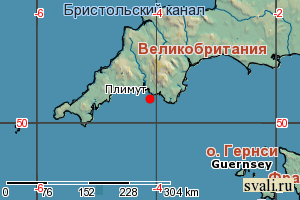
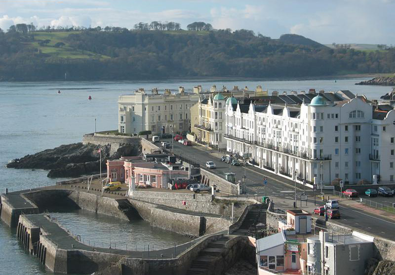

Плимут расположен на юго-западе Англии. Он стоит на берегу бухты, находящейся между устьями рек Тамара и Плима. Плимут был основан в XII в., а в XIV в. стал важным торговым и военным портом страны. В XVI в. здесь жил отважный английский мореплаватель Френсис Дрейк. В 1620 г. из Плимута вышел парусник "Мэйфлауэр", который доставил в Северную Америку более сотни колонистов, основавших там поселение с одноименным названием, который в настоящее время является крупным городом штата Массачусетс. А в 1772 г. отсюда отправился во второе трехлетнее кругосветное путешествие Джеймс Кук. Сегодня Плимут - это современный город с населением более 270 тысяч жителей, большим количеством магазинов, пабов, ресторанов, театров, спортивных сооружений. Порт является главной достопримечательностью Плимута. Еще здесь можно увидеть самый глубокий в Европе аквариум. 
Стоит посмотреть на окрестности Плимута - рыбачью деревушку Кловелли, красивейшее побережье городка Сент-Ив, прибрежные пейзажи у Конца Земли, руины Тинтагеля на вершине скалы, где по преданиям родился Король Артур, Кентские пещеры.